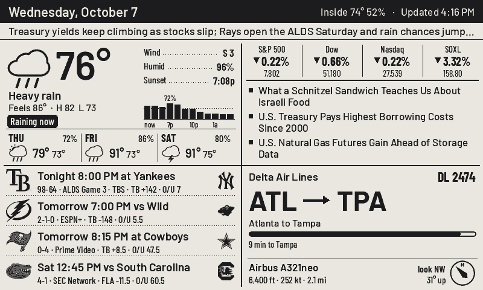

Four corners of your day on a 7.5-inch e-paper screen: the weather, the news and markets, your teams, and whatever is flying over the house right now. It runs on its own battery and only repaints the corner that changed.
Current conditions, a rain-chance strip for the next few hours and three days ahead.
Index moves plus any tickers you pick, over headlines that rotate on every update.
Live score, last result or next game for every team you follow, with TV and the line.
Airline, route, aircraft, altitude and which way to look, from live ADS-B.
Above the quad, a strip carries one line: your own pinned message, a severe weather alert, or a sentence from Claude that ties the day together. When the Space Station is about to pass or a rocket is going up within sight, it takes over the plane corner with a countdown and a compass.
Each corner opens into a full screen of its own. Detail pages fall back to the quad after a few minutes, so the board never gets stuck on one. Click any of these to send it to the device above.
A small Python server draws every pixel. The firmware only fetches rectangles and decides how to refresh them, so changing the layout, the cadence or a data source never means reflashing the board.
The server composes the full 800×480 frame with Pillow, using the same fonts and icons you see here.
It compares against what is on the glass and keeps only the rectangles that changed.
The board holds an HTTPS request open. On battery it deep-sleeps between checks instead.
Changed corners get a ~1 s partial refresh. Every couple of hours a full flash wipes ghosting.
| What | How often | Refresh |
|---|---|---|
| Every corner | 10 min | Full, 4 grey levels, anti-aliased text |
| Plane overhead | as set | Partial, no flash |
| Live scores | 3 min | Partial, only while a game is on |
| Ghosting wipe | 120 min | One flashing full refresh |
| Quiet hours | e.g. 23–6 | No scheduled updates overnight |
All of these are knobs on a small web dashboard the server hosts, along with location, feeds, tickers, teams and the corner order.
claude CLIThe server needs to be reachable over HTTPS from the board, so put it behind nginx or Caddy on a domain you own. Running locally works for previews: python cases.py renders every screen to PNG without any hardware.
# Python 3.10+ cd server pip install -r requirements.txt cp quad.env.example quad.env # set tokens set -a; . ./quad.env; set +a python app.py # settings: http://127.0.0.1:8740/?k=$QUAD_ADMIN
cd firmware
cp src/secrets.example.h src/secrets.h # host + token
pio run -t upload --upload-port COM9
First boot opens a Wi-Fi setup portal named QuadBoard-XXXX. Join it from your phone and pick your network.